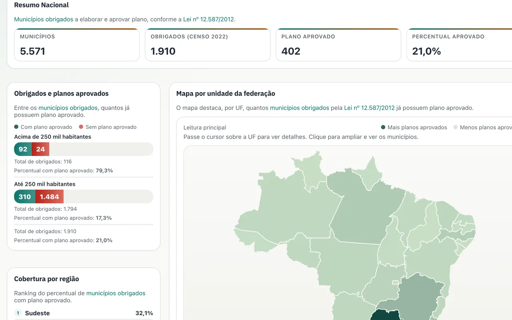
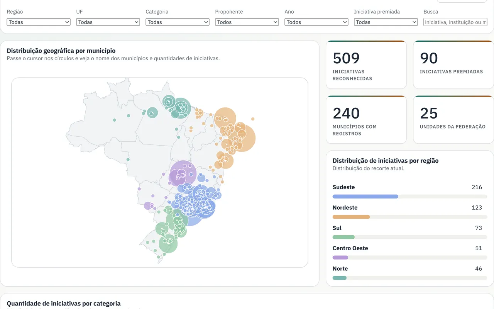
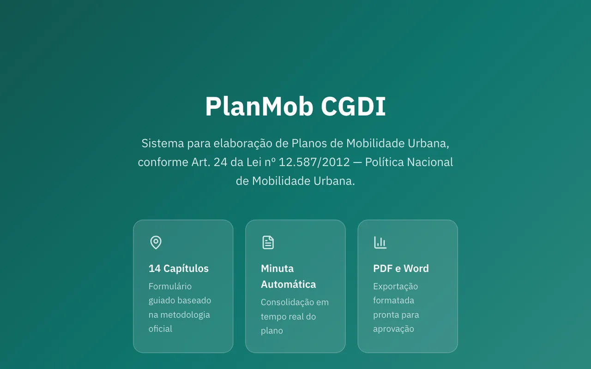
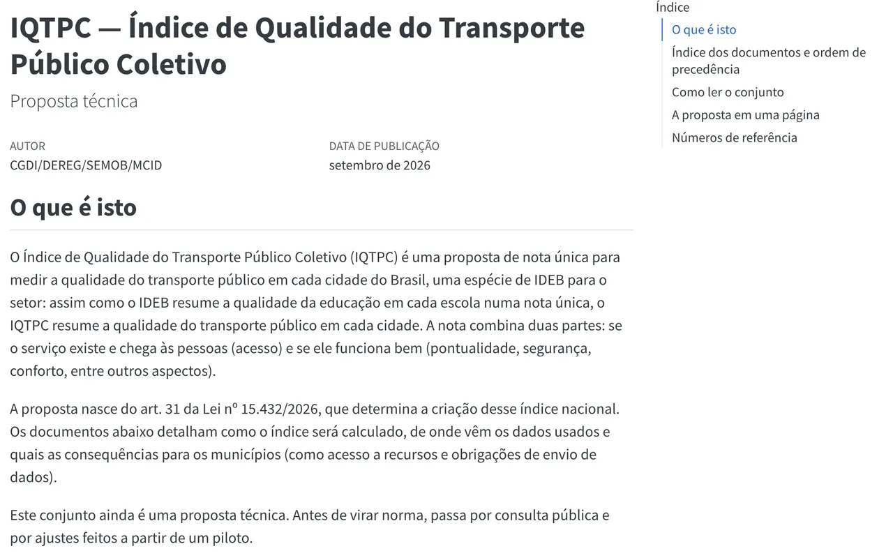
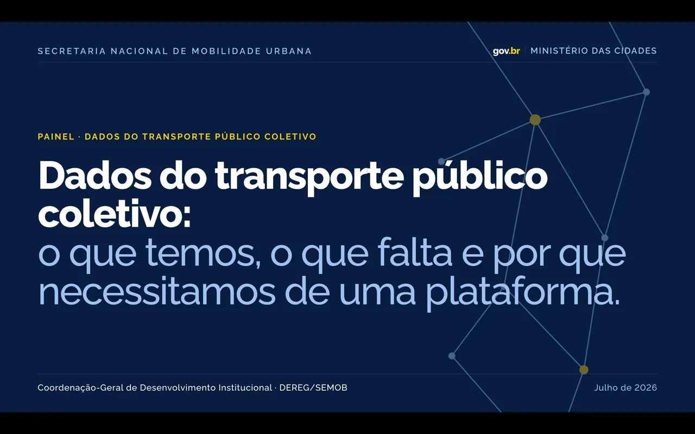

Dados públicos, métodos e produtos de mobilidade urbana.
Projetos de mobilidade urbana, análise de dados e inteligência artificial: da metodologia à implementação.
Projetos publicados 5

Painel de Planos de Mobilidade Urbana
Monitoramento nacional da situação dos planos municipais, com séries históricas, mapas e recortes territoriais.
Ver projeto ramson.com.br/painel_planos_cgdi

Painel Bicicleta
Panorama da infraestrutura e das políticas de mobilidade ciclística.
Ver projeto ramson.com.br/painel_bicicleta_cgdi

PlanMob CGDI
Sistema para organizar, acompanhar e qualificar informações sobre Planos de Mobilidade Urbana.
Ver projeto planmob-cgdi.vercel.app

IQTPC
Índice e metodologia para avaliar a qualidade do transporte coletivo.
Ler publicação ramson.com.br/iqtpc

Dados PEMOB
Leitura visual dos resultados da Pesquisa Nacional de Mobilidade Urbana.
Ver projeto ramson.com.br/apresentacao_dados_pemob
Trabalhos internos 13
O acervo reúne produtos publicados e trabalhos internos. Itens restritos mostram somente escopo e contribuição (sem código, repositório ou dados sensíveis).
-
Plataforma PEMOB
Cadastro, aplicação e acompanhamento de questionários da pesquisa nacional.
Projeto interno
-
Agente de Análise Legislativa
Fluxo assistido por IA para analisar proposições, verificar normas e preparar Notas Técnicas para revisão humana.
Projeto interno
-
Painel de Fichas SEMOB
Consulta territorial e síntese de investimentos por município.
Projeto interno
-
Painel Novo PAC — PC 32
Acompanhamento de propostas, alterações de base e recortes executivos.
Projeto interno
-
PND-TPC
Portal analítico para a Plataforma Nacional de Dados do Transporte Público Coletivo.
Em desenvolvimento
-
Explorador GTFS Fortaleza
Exploração de linhas, viagens e horários a partir de dados GTFS.
Protótipo
-
Radar Recarga kWh
Comparador colaborativo de preços de recarga de veículos elétricos.
MVP
-
Agenda de Carregadores
Reservas, fila de espera e validação operacional de recargas elétricas.
Projeto interno
-
População Beneficiada — FGTS
Metodologia parametrizada para estimar alcance de investimentos em mobilidade.
Estudo técnico
-
SIMU
Arquitetura de informação para indicadores e dados abertos de mobilidade.
Conceito
-
Automação de TCI
Classificação e exportação estruturada de informações técnicas.
Ferramenta interna
-
Aferição PEI/PPA
Consolidação e conferência de indicadores de planejamento institucional.
Ferramenta interna
-
Observatório da Mobilidade
Ambiente integrado para projetos, indicadores e inteligência territorial.
Em desenvolvimento
Dados, métodos e interfaces.
O acervo reúne estruturas de dados, metodologias e produtos digitais relacionados à mobilidade urbana e às políticas públicas. Os projetos abrangem desde o tratamento da informação até sua apresentação em instrumentos de gestão.